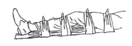

- Balut denga pembalut tekan diatas lutut
- Pasang bidai dibawah lutut, dengan posisi agak dibengkokkan
- Beri bantalan dibawah lutut dan pergelangan kaki
- Untuk mengurangi rasa sakit pergunakan kompreses